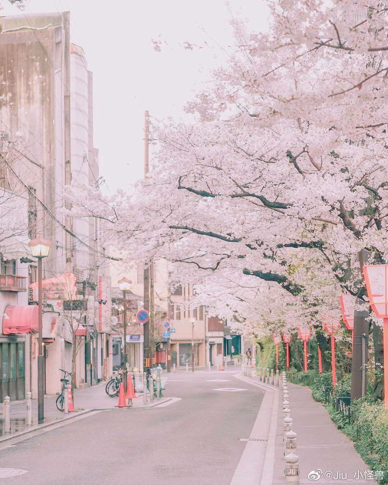

<!doctype html>
<html lang="en">
<head>
    <meta charset="UTF-8">
    <meta name="viewport"
          content="width=device-width, user-scalable=no, initial-scale=1.0, maximum-scale=1.0, minimum-scale=1.0">
    <meta http-equiv="X-UA-Compatible" content="ie=edge">
    <title>Document</title>
</head>
<style>
    img{
        width: 300px;
        height: auto;
    }
</style>
<body>
    <canvas id="tutorial" width="400" height="400"></canvas>
    <!--<div id="box">-->
        <!--<div id="bomb">啪嗒！</div>-->
        <!--<ul>-->
            <!--<li class="item">-->
                <!--<h3>襟三江而带五湖，控蛮荆而引瓯越。</h3>-->
            <!--</li>-->
            <!--<li class="item">-->
                <!--<h3>潦水尽而寒潭清，烟光凝而暮山紫。</h3>-->
            <!--</li>-->
            <!--<li class="item">-->
                <!--<h3>落霞与孤鹜齐飞，秋水共长天一色。</h3>-->
            <!--</li>-->
            <!--<li class="item">-->
                <!---->
            <!--</li>-->
        <!--</ul>-->
    <!--</div>-->
</body>
</html>
<script>
    //渐变色长方形
    // 获取画布
    var canvas = document.getElementById('tutorial')
    //获取2d上下文
    var ctx = canvas.getContext('2d');
    function draw() {
        //createLinearGradient(渐变开始点的 x 坐标,渐变开始点的 y 坐标,渐变结束的x,渐变结束的y)
        var my_gradient = ctx.createLinearGradient(0,0,200,200)
        my_gradient.addColorStop(0,'#438569')
        my_gradient.addColorStop(1,'#e6bcdb')
        ctx.fillStyle=my_gradient
        ctx.fillRect(0,0,200,200)
        //绘制被填充的矩形
    }
    draw()
    // 返回 ImageData 对象，该对象为画布上指定的矩形复制像素数据
    // html2canvas(ele).then(dom=>{
    //     const { width, height } = dom; // canvas宽高
    //     let ctx = dom.getContext('2d'); // canvas绘图对象
    //     let originalFrame = ctx.getImageData(0,0,width,height)
    //     let frames = []
    //     //createImageData() 方法创建新的空白 ImageData 对象
    //     for(let i=0;i<32;i++){
    //         frames[i] = ctx.createImageData(width, height);
    //     }
    //     for(x=0;x<width;x++){
    //         for(y=0;y<height;y++){
    //             var frameIndex = Math.floor((32*(Math.random()+(2*x)/width)/3))
    //             var pixelIndex = 4*(y*width+x)
    //             for (offset = 0; offset < 4; offset++) {
    //                 frames[frameIndex].data[pixelIndex + offset] = originalFrame.data[pixelIndex + offset];
    //             }
    //         }
    //     }
    // })
    // let contain = document.createElement('div')
    // contain.classList.add('contain');
    // contain.style.width = `${width}px`;
    // contain.style.height = `${height}px`;
    // let frames2doms = frames.map((frameData,i)=>{
    // //如果传递给它的参数是 true，它还将递归复制当前节点的所有子孙节点。否则，它只复制当前节点。
    //     let domCopy = dom.cloneNode(true)
    // //putImageData(规定要放回画布的 ImageData 对象,	ImageData 对象左上角的 x 坐标.ImageData 对象左上角的 y 坐标)
    //     domCopy.getContext('2d').putImageData(frameData,0,0)
    // domCopy.style.transitionDelay=`${(1.35*i)/frames.length}s`
    //     contain.appendChild(domCopy);
    //     return domCopy
    // })
    // ele.classList.add('disintegrated')
    // ele.appendChild(contain)
    // ele.border='0'
    // contain.offsetLeft;
    // frames2doms.map(item=>{
    //     let random = 2*Math.PI*(Math.random()-0.5)
    //     item.style.transform=`rotate(${15*(Math.random()-0.5)}deg  translate(${60 * Math.cos(random)}px, ${30 * Math.sin(random)}px) rotate(${-15 * (Math.random() - 0.5)}deg) `
    //     item.style.opacity = 0;
    // })
    var bomb = document.getElementById('bomb')
    bomb.onclick=function () {
        var ele= document.getElementById('box')
        html2canvas(ele).then(dom=>{
            const { width, height } = dom; // canvas宽高
            let ctx = dom.getContext('2d'); // canvas绘图对象
            let originalFrame = ctx.getImageData(0,0,width,height)
            let frames = []
            //createImageData() 方法创建新的空白 ImageData 对象
            for(let i=0;i<32;i++){
                frames[i] = ctx.createImageData(width, height);
            }
            for(x=0;x<width;x++){
                for(y=0;y<height;y++){
                    var frameIndex = Math.floor((32*(Math.random()+(2*x)/width)/3))
                    var pixelIndex = 4*(y*width+x)
                    for (offset = 0; offset < 4; offset++) {
                        frames[frameIndex].data[pixelIndex + offset] = originalFrame.data[pixelIndex + offset];
                    }
                }
            }
        })
        let contain = document.createElement('div')
        contain.classList.add('contain');
        contain.style.width = `${width}px`;
        contain.style.height = `${height}px`;
        let frames2doms = frames.map((frameData,i)=>{
            //如果传递给它的参数是 true，它还将递归复制当前节点的所有子孙节点。否则，它只复制当前节点。
            let domCopy = dom.cloneNode(true)
            //putImageData(规定要放回画布的 ImageData 对象,	ImageData 对象左上角的 x 坐标.ImageData 对象左上角的 y 坐标)
            domCopy.getContext('2d').putImageData(frameData,0,0)
            domCopy.style.transitionDelay=`${(1.35*i)/frames.length}s`
            contain.appendChild(domCopy);
            return domCopy
        })
        ele.classList.add('disintegrated')
        ele.appendChild(contain)
        ele.border='0'
        contain.offsetLeft;
        frames2doms.map(item=>{
            let random = 2*Math.PI*(Math.random()-0.5)
            item.style.transform=`rotate(${15*(Math.random()-0.5)}deg  translate(${60 * Math.cos(random)}px, ${30 * Math.sin(random)}px) rotate(${-15 * (Math.random() - 0.5)}deg) `
            item.style.opacity = 0;
        })
    }
</script>
